Prompting-Features#
Prompt Syntax Features#
The InvokeAI prompting language has the following features:
Attention weighting#
Append a word or phrase with - or +, or a weight between 0 and 2
(1=default), to decrease or increase "attention" (= a mix of per-token CFG
weighting multiplier and, for -, a weighted blend with the prompt without the
term).
The following syntax is recognised:
- single words without parentheses:
a tall thin man picking apricots+ - single or multiple words with parentheses:
a tall thin man picking (apricots)+a tall thin man picking (apricots)-a tall thin man (picking apricots)+a tall thin man (picking apricots)- - more effect with more symbols
a tall thin man (picking apricots)++ - nesting
a tall thin man (picking apricots+)++(apricotseffectively gets+++) - all of the above with explicit numbers
a tall thin man picking (apricots)1.1a tall thin man (picking (apricots)1.3)1.1. (+is equivalent to 1.1,++is pow(1.1,2),+++is pow(1.1,3), etc;-means 0.9,--means pow(0.9,2), etc.)
You can use this to increase or decrease the amount of something. Starting from
this prompt of a man picking apricots from a tree, let's see what happens if
we increase and decrease how much attention we want Stable Diffusion to pay to
the word apricots:
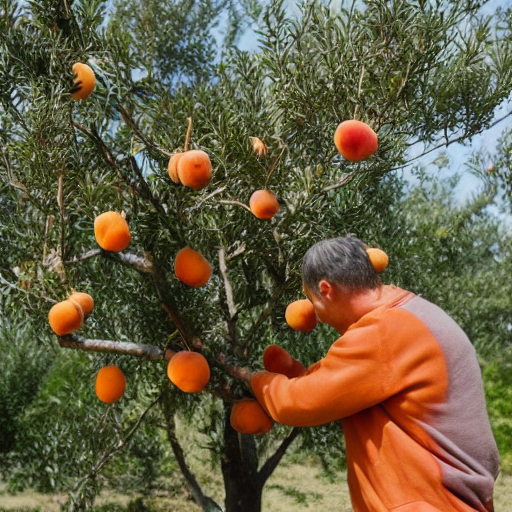
Using - to reduce apricot-ness:
a man picking apricots- from a tree |
a man picking apricots-- from a tree |
a man picking apricots--- from a tree |
|---|---|---|
| 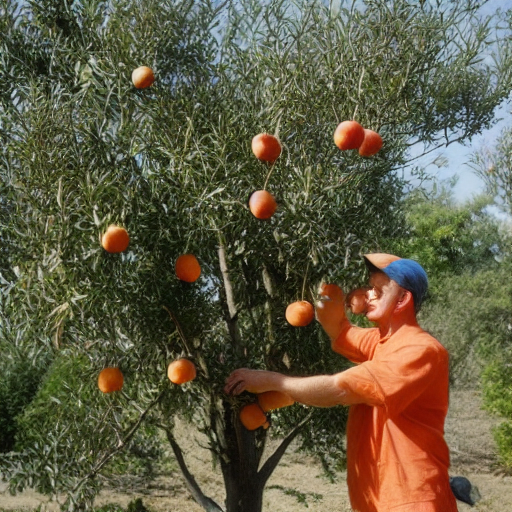 |
Using + to increase apricot-ness:
a man picking apricots+ from a tree |
a man picking apricots++ from a tree |
a man picking apricots+++ from a tree |
a man picking apricots++++ from a tree |
a man picking apricots+++++ from a tree |
|---|---|---|---|---|
| 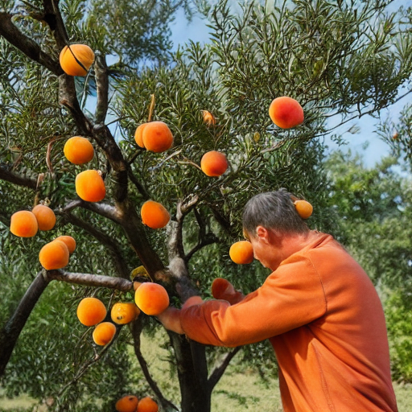 | 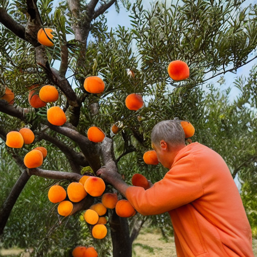 | 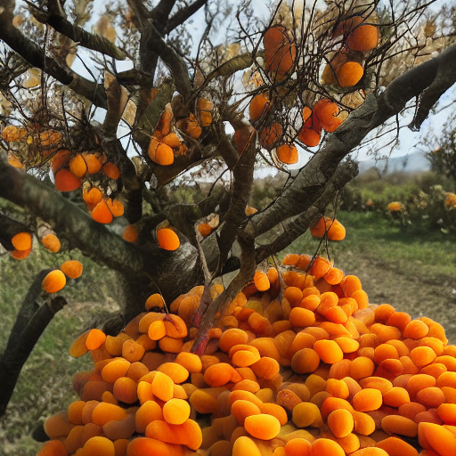 | 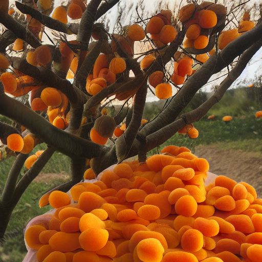 |
You can also change the balance between different parts of a prompt. For
example, below is a mountain man:
And here he is with more mountain:
mountain+ man |
mountain++ man |
mountain+++ man |
|---|---|---|
Or, alternatively, with more man:
mountain man+ |
mountain man++ |
mountain man+++ |
mountain man++++ |
|---|---|---|---|
| 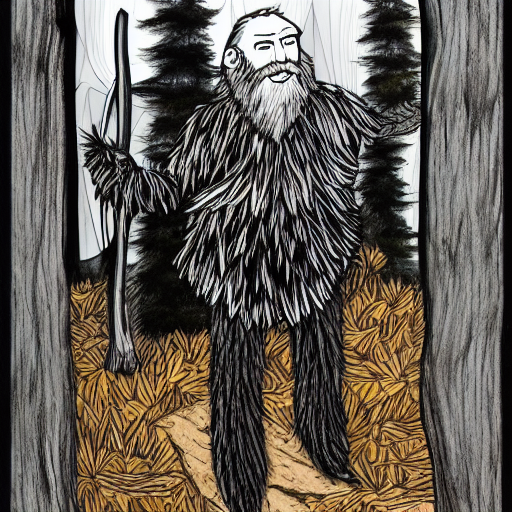 | 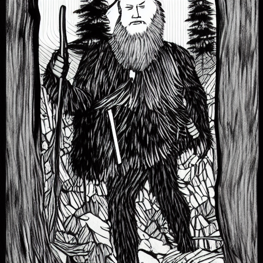 |
Prompt Blending#
("a tall thin man picking apricots", "a tall thin man picking pears").blend(1,1)- The existing prompt blending using
:<weight>will continue to be supported -("a tall thin man picking apricots", "a tall thin man picking pears").blend(1,1)is equivalent toa tall thin man picking apricots:1 a tall thin man picking pears:1in the old syntax. - Attention weights can be nested inside blends.
- Non-normalized blends are supported by passing
no_normalizeas an additional argument to the blend weights, eg("a tall thin man picking apricots", "a tall thin man picking pears").blend(1,-1,no_normalize). very fun to explore local maxima in the feature space, but also easy to produce garbage output.
See the section below on "Prompt Blending" for more information about how this works.
Prompt Conjunction#
Join multiple clauses together to create a conjoined prompt. Each clause will be passed to CLIP separately.
For example, the prompt:
Can be used with .and():
Each will give you different results - try them out and see what you prefer!
Escaping parentheses and speech marks#
If the model you are using has parentheses () or speech marks "" as part of its
syntax, you will need to "escape" these using a backslash, so that(my_keyword)
becomes \(my_keyword\). Otherwise, the prompt parser will attempt to interpret
the parentheses as part of the prompt syntax and it will get confused.
Prompt Blending#
You may blend together prompts to explore the AI's latent semantic space and generate interesting (and often surprising!) variations. The syntax is:
This will tell the sampler to blend 25% of the concept of prompt #1 with 75% of the concept of prompt #2. It is recommended to keep the sum of the weights to around 1.0, but interesting things might happen if you go outside of this range.
Because you are exploring the "mind" of the AI, the AI's way of mixing two concepts may not match yours, leading to surprising effects. To illustrate, here are three images generated using various combinations of blend weights. As usual, unless you fix the seed, the prompts will give you different results each time you run them.
Let's examine how this affects image generation results:
This example doesn't use blending at all and represents the default way of mixing concepts.
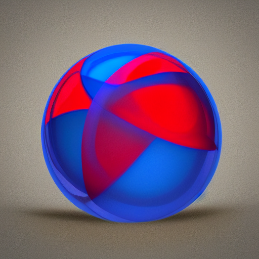
It's interesting to see how the AI expressed the concept of "cube" within the sphere. If you look closely, there is depth there, so the enclosing frame is actually a cube.
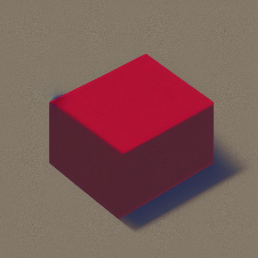
Now that's interesting. We get an image with a resemblance of a red cube, with a hint of blue shadows which represents a melding of concepts within the AI's "latent space" of semantic representations.
Definitely more blue-spherey.
Whoa...! I see blue and red, and if I squint, spheres and cubes.
Dynamic Prompts#
Dynamic Prompts are a powerful feature designed to produce a variety of prompts based on user-defined options. Using a special syntax, you can construct a prompt with multiple possibilities, and the system will automatically generate a series of permutations based on your settings. This is extremely beneficial for ideation, exploring various scenarios, or testing different concepts swiftly and efficiently.
Structure of a Dynamic Prompt#
A Dynamic Prompt comprises of regular text, supplemented with alternatives enclosed within curly braces {} and separated by a vertical bar |. For example: {option1|option2|option3}. The system will then select one of the options to include in the final prompt. This flexible system allows for options to be placed throughout the text as needed.
Furthermore, Dynamic Prompts can designate multiple selections from a single group of options. This feature is triggered by prefixing the options with a numerical value followed by \(\(. For example, in {2\)\)option1|option2|option3}, the system will select two distinct options from the set.
Creating Dynamic Prompts#
To create a Dynamic Prompt, follow these steps:
Draft your sentence or phrase, identifying words or phrases with multiple possible options.
Encapsulate the different options within curly braces {}.
Within the braces, separate each option using a vertical bar |.
If you want to include multiple options from a single group, prefix with the desired number and $$.
For instance: A {house|apartment|lodge|cottage} in {summer|winter|autumn|spring} designed in {style1|style2|style3}.
How Dynamic Prompts Work#
Once a Dynamic Prompt is configured, the system generates an array of combinations using the options provided. Each group of options in curly braces is treated independently, with the system selecting one option from each group. For a prefixed set (e.g., 2$$), the system will select two distinct options.
For example, the following prompts could be generated from the above Dynamic Prompt:
A house in summer designed in style1, style2
A lodge in autumn designed in style3, style1
A cottage in winter designed in style2, style3
And many more!
When the Combinatorial setting is on, Invoke will disable the "Images" selection, and generate every combination up until the setting for Max Prompts is reached.
When the Combinatorial setting is off, Invoke will randomly generate combinations up until the setting for Images has been reached.
Tips and Tricks for Using Dynamic Prompts#
Below are some useful strategies for creating Dynamic Prompts:
Utilize Dynamic Prompts to generate a wide spectrum of prompts, perfect for brainstorming and exploring diverse ideas.
Ensure that the options within a group are contextually relevant to the part of the sentence where they are used. For instance, group building types together, and seasons together.
Apply the 2$$ prefix when you want to incorporate more than one option from a single group. This becomes quite handy when mixing and matching different elements.
Experiment with different quantities for the prefix. For example, 3$$ will select three distinct options.
Be aware of coherence in your prompts. Although the system can generate all possible combinations, not all may semantically make sense. Therefore, carefully choose the options for each group.
Always review and fine-tune the generated prompts as needed. While Dynamic Prompts can help you generate a multitude of combinations, the final polishing and refining remain in your hands.
SDXL Prompting#
Prompting with SDXL is slightly different than prompting with SD1.5 or SD2.1 models - SDXL expects a prompt and a style.
Prompting#
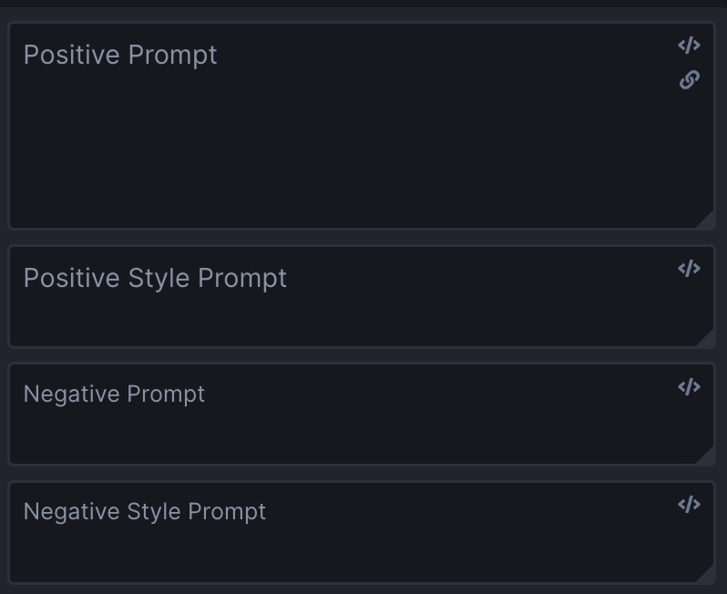
In the prompt box, enter a positive or negative prompt as you normally would.
For the style box you can enter a style that you want the image to be generated in. You can use styles from this example list, or any other style you wish: anime, photographic, digital art, comic book, fantasy art, analog film, neon punk, isometric, low poly, origami, line art, cinematic, 3d model, pixel art, etc.
Concatenated Prompts#
InvokeAI also has the option to concatenate the prompt and style inputs, by pressing the "link" button in the Positive Prompt box.
This concatenates the prompt & style inputs, and passes the joined prompt and style to the SDXL model. 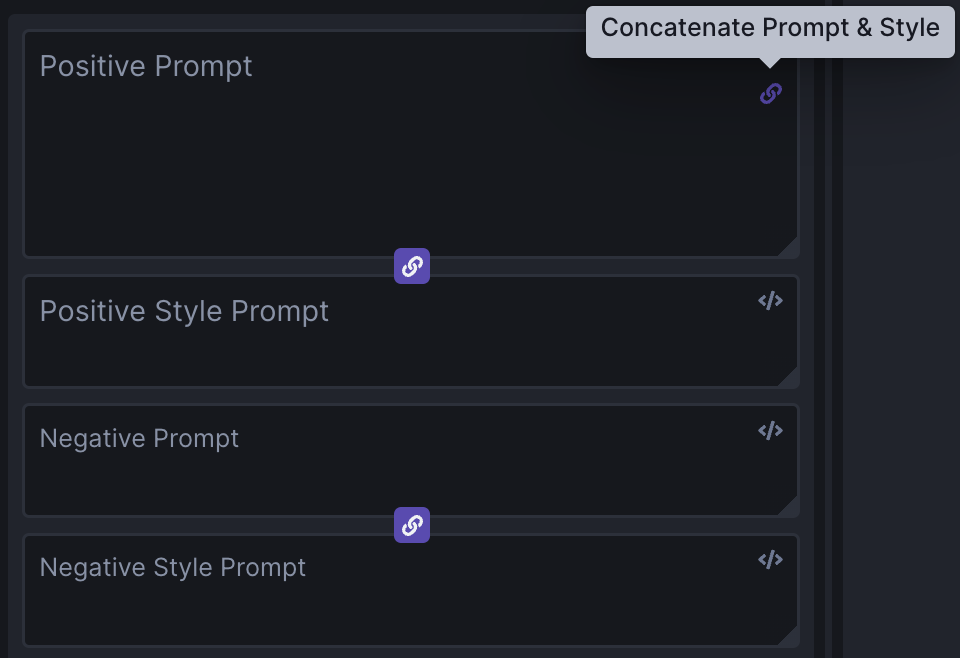